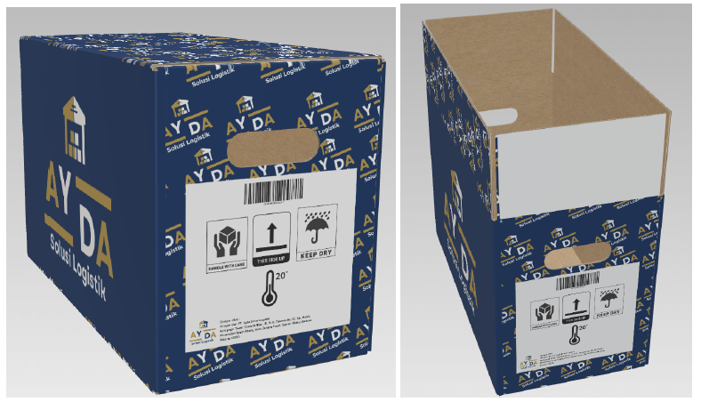

PROJECTS
A. TRANSPORTATION & ROUTE OPTIMIZATION
This project focuses on an in-depth analysis of the Washing Machine distribution network from the Kudus DC. As a Logistics Analyst, I was responsible for designing efficient routes, optimizing transportation modes, and quantitatively identifying cost-saving opportunities.
1. Cost Modeling & Impact Analysis (22.94% Savings)

This graph illustrates a 26.93% cost saving. This was achieved by comparing the Total Baseline Cost (using a non-optimal, multi-modal convoy scenario) against the Total Optimal Cost (using efficient, single-mode clustered routes).
View Detailed Calculation2. Cluster Grouping: Results of Saving Matrix Analysis

This visual shows the route clusters (Cluster 1, 2, 3) generated by the Saving Matrix method. This step was crucial for consolidating nearby delivery points into efficient routes for load capacity analysis.
3. Optimized Route Scheme (Example: Cluster 1 Final Route)

Operational Integration Focus: This final route (using Nearest Insert) becomes the Dispatch Baseline used for daily Shipment Tracking and Delivery Note verification, ensuring OTD performance and time-window adherence.
B. WAREHOUSE FLOW & OUTBOUND STRATEGY
This module demonstrates the strategic redesign of the supply chain's physical hub for AYDA Solusi Logistik. As a Distribution Specialist, the aim was to optimize storage and outbound flow, ensuring product quality and accelerating transport coordination.
1. Packaging Design & Damage Claim Prevention

Secondary Packaging

Tertiary Packaging

Honeycomb Corrugated Board
Optimal packaging design was used to minimize transport damage risk—a proactive step to reduce potential customer claims/complaints. The use of the **sturdy yet lightweight honeycomb corrugated board** for tertiary packaging ensures product stability during long-distance transport.
2. End-to-End Warehouse Flow & Transport Coordination

This flow diagram maps the process, focusing on the connection between packaging and outbound stages to streamline transport coordination and reduce truck waiting time (queuing time).
3. Layout Visualization & Operational Efficiency


This 3D model using (SketchUp) was used for cross-functional communication and designing the U-Shaped layout to accelerate the shipping process.
C. INVENTORY & STRATEGIC PLANNING
This module demonstrates strategic analysis in distribution planning (DRP) and business risk mitigation that impacts supply chain fluency.
1. Distribution Requirement Planning (DRP) Implementation

Logistics Link: This DRP analysis projects Gross Requirements to determine Order Releases, preventing stock-outs and supporting accurate transport load planning.
2. Channel Conflict Mitigation Strategy
Identified high potential for Horizontal Channel Conflict, which commonly occurs between distributors due to territory overlap and price discrepancies. This conflict type can severely damage partner relationships and trigger price wars. The formulated solution to mitigate this risk involves establishing exclusive distribution territories clearly defined within detailed contracts. This agreement should integrate a real-time tracking system to monitor sales activity and ensure transparency among all partners.
SKILLS & COMPETENCIES
Logistics & Transportation Analysis
- Route Optimization (Saving Matrix)
- Cost Modeling (BBM, TKBM, Tol)
- Distribution Requirement Planning (DRP)
- Inventory Analysis & Claim Prevention
Data Management & Reporting Tools
- Odoo-ERP (Inventory/Sales Module)
- Tableau (Dashboard Creation)
- MS Excel (Advanced Modeling, Pivot)
- MySQL (Basic Queries)
Operational & Communication
- Cross-functional Communication
- Stakeholder Management (Vendor/Warehouse)
- Deviation Analysis & Risk Mitigation
- Packaging Design & Process Mapping
CERTIFICATIONS

Excel Modeling & Pivot

MySQL Database Queries

Tableau Data Visualization
ORGANIZATIONAL EXPERIENCE
- Developed and led the strategic planning for 5 major operational components (events), ensuring optimal resource allocation and maximizing participant capacity.
- Managed coordination across 4 key divisions/stakeholders, overseeing resource logistics and executing full process rehearsals to mitigate operational execution risks.
- Hosted and facilitated a 3-day program for 100+ participants, effectively managing the session flow and communication rhythm to ensure adherence to the timeline.
- Conducted feasibility analysis and developed comprehensive Contingency Plans to mitigate operational disruptions.
EDUCATION
Multimedia Nusantara Polytechnic
Digital Commerce & Supply Chain (GPA 3.85/4.00)
Aug 2023 – Aug 2027 (Expected)
Institution Part of the Kompas Gramedia Foundation, the institution shares the same founding body as Universitas Multimedia Nusantara (UMN), which holds A-Accreditation by BAN-PT. This foundation emphasizes integrated digital and business competencies.
- 100% Scholarship Recipient - 8 semesters